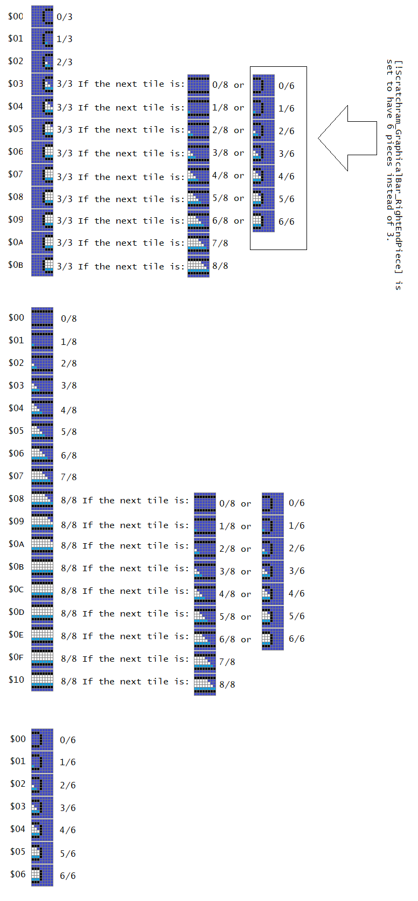
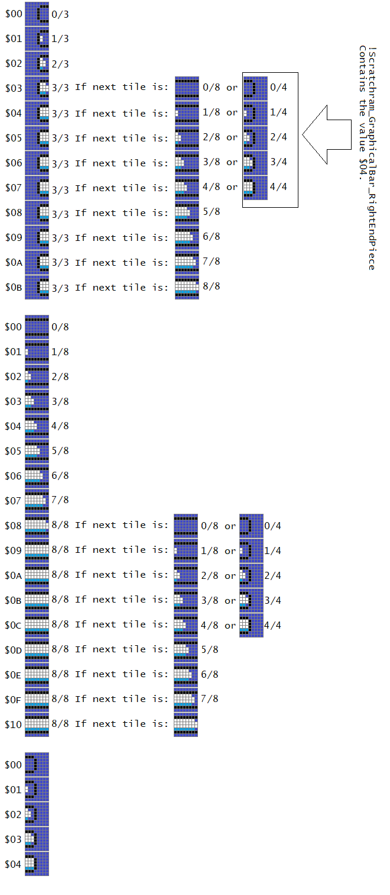

Note: This does not support double-bar's “Using separate graphics”, as having even more tiles would eat up a lot of tile space.
To have this gimmick is very similar to the basic graphical bar code, but you use ConvertBarFillAmountToTilesEdgeOverMultipleTiles instead of ConvertBarFillAmountToTiles. Don't forget to insert the graphics accordingly.
I've provide tables in the exgraphics subfolders (the HTML files) so you don't have to manually enter the tile number for each fill amount.
All of these uses the same subroutine (but different tile numbers and the number of values in the table) using ConvertBarFillAmountToTilesEdgeOverMultipleTiles (instead of using ConvertBarFillAmountToTiles). The way this whole thing works is by taking the fill amount of a given tile byte, then add by the amount of the next tile byte (if that given tile byte is the last tile, then don't add by anything), the sum is now what tile to use for that given tile byte:
| Fill byte table (relative address/example) | Tile byte type | Fill amount | Fill amount maximum | Index to use |
|---|---|---|---|---|
| +0/$7F844A | Left end | $03 | $03 | $04 (This fill amount, plus 1 from next tile amount) |
| +1/$7F844B | Middle 1 | $01 | $08 | $01 (This fill amount, plus 0 of the next tile amount) |
| +2/$7F844C | Middle 2 | $00 | $08 | $00 (This fill amount, plus 0 of the next tile amount) |
| +3/$7F844D | Middle 3 | $00 | $08 | $00 (This fill amount, plus 0 of the next tile amount) |
| +4/$7F844E | Middle 4 | $00 | $08 | $00 (This fill amount, plus 0 of the next tile amount) |
| +5/$7F844F | Middle 5 | $00 | $08 | $00 (This fill amount, plus 0 of the next tile amount) |
| +6/$7F8450 | Middle 6 | $00 | $08 | $00 (This fill amount, plus 0 of the next tile amount) |
| +7/$7F8451 | Middle 7 | $00 | $08 | $00 (This fill amount, plus 0 of the next tile amount) |
| +8/$7F8452 | Right end | $00 | $06 | $00 (use only this tile's fill amount for indexing, don't add by a value after here) |


